桜 Cherry Blossom
May 1st, 2017


今年も家の庭の桜、近所の桜が満開になりました。
杉並区の善福寺川公園は桜の名所で、満開時には川沿いでピクニックする人で賑わいます。
桜の花道をたくさんの人が、散歩していて、桜に魅せられた道行く人、それはもう本当に幸せそうでした。
Like every year, cherry blossoms were in full bloom in this April.
Zenpukuji-gawa Park in Skuginami-ku is famous place for cherry blossom and in April, many people come for picnic along the river.
I had walked along Sakura’s road there and i was happy to see people’s cheerful face who amazed by beautiful scenery
Uji River and Uji Shrine
Apr 2nd, 2017


とても良く晴れていたので、 宇治川沿いを散策。
宇治橋の近くに宇治神社があり、本殿は国の重要文化財となっています。宇治川の音も聞こえなくなり、緑の感じられる敷地内は静謐な雰囲気を漂わせていて、心が落ち着きます。
I walked along Uji river in a sunny day and i went to Uji Shrine near the river.
Main shrine is designated as national important property there.The site is surrounded with trees and you can relax in a peaceful atmosphere.
Nakamura Tokichi in Uji
1st Apr, 2017


京都の宇治に行き、中村藤吉の平等院本店にてお昼を食べました。この店舗は宇治川に隣接していて、窓際に座れば宇治川・宇治の対岸の街並みをゆっくり見ることが出来ます。
茶そば・茶うどんがランチメニューにあり茶うどんを食べてみました。
店内に梅の一輪挿しが飾ってあり美しい。
In Uji-City, in Kyoto, there is Nakamura Tokichi’s restaurant and cafe.This shops is located along side Uji river and you can enjoy the view of Uji city on the opposite river.
You can eat Martcha soba/udon for the lunch there and also various kinds of Matcha sweets which is popular among tourists.
Ume blossom is arranged in a single flower vase, and it was beautiful.
Sfera Kyoto
March 25th, 2017
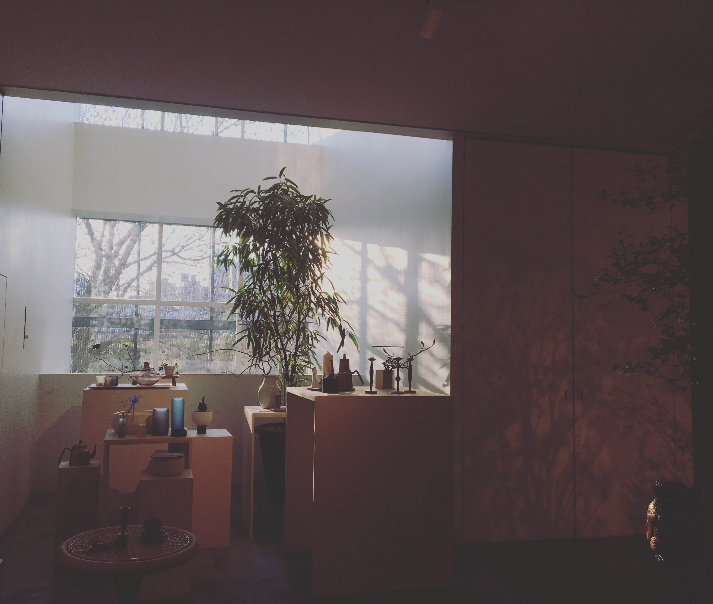
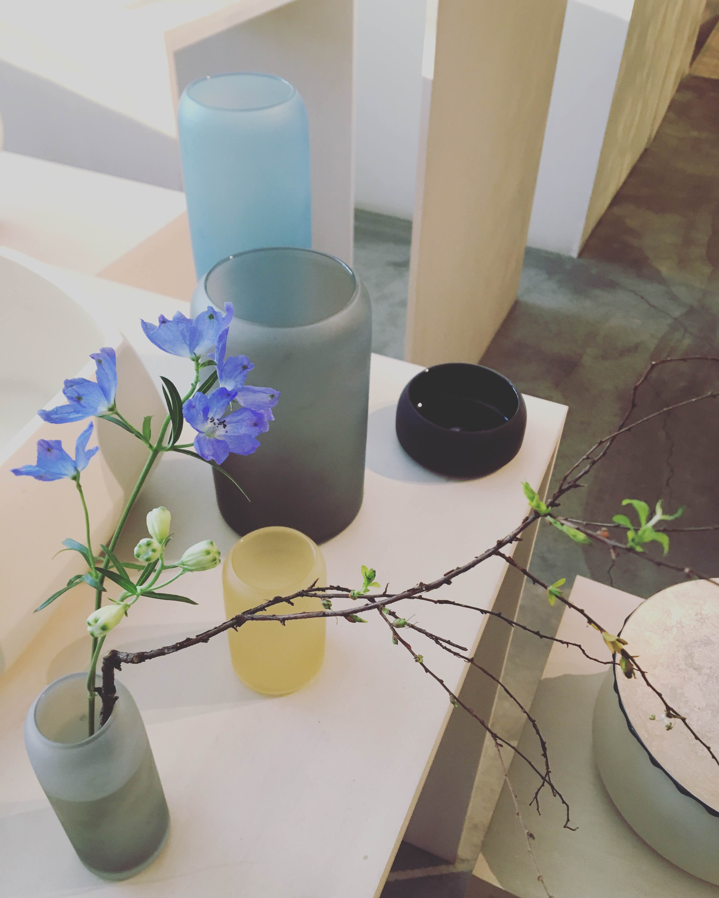
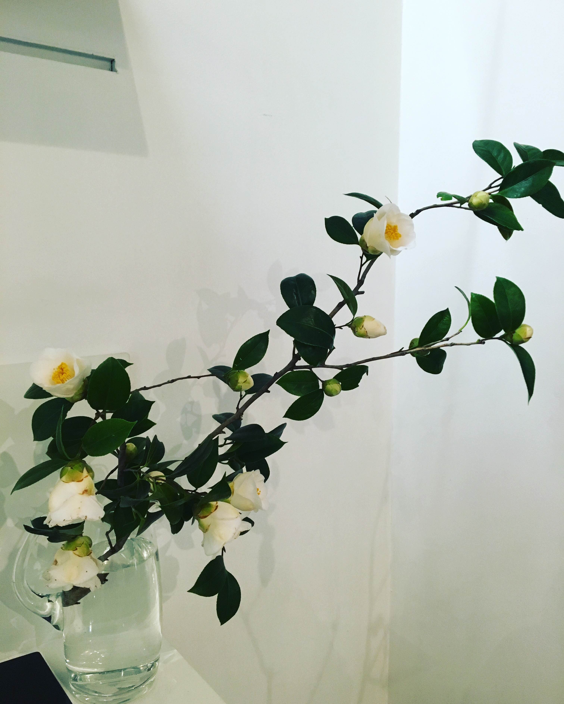
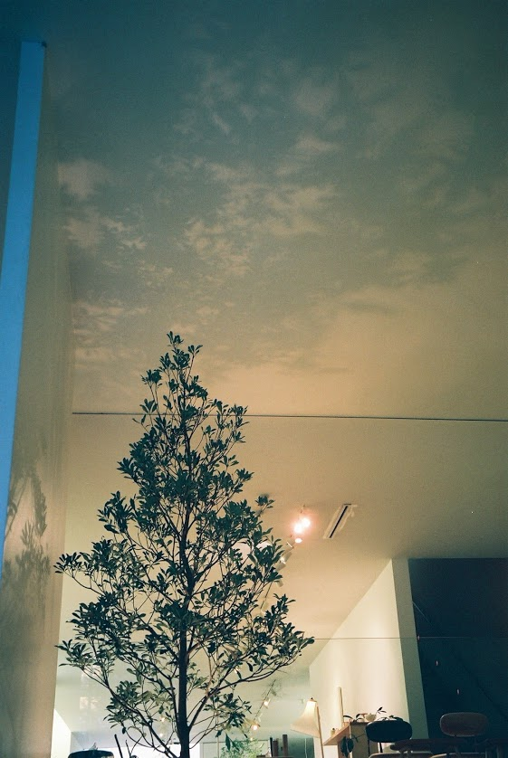
京都の祇園に、Sfera Builidingという一際センスの光るビルを見つけ、中に入らないと後悔するだろうと思い入ってみると、そこは美しい空間が広がっていました。１階がインテリアショップとなっていて、美しいクラフトが並んでいました。特に花瓶のデザイン・形がシンプルで美しいです。
Sferaは2001年にスタートした京都発のインテリアブランドで、日本の伝統的なものづくり及び最新のスタイル・デザインを世界に発信していくというコンセプトの元、長く世界の人から愛される製品を作り出しています。
祇園にあるこのSfera Buildingには地下１階にはカフェ、１階にショップ、２階にギャラリー、３階にバーがあり、文化施設としても機能もあり、次回来る時はもっとゆっくりこのビルで素敵な時を過ごしたいと思いました。
歴史ある祇園の街で、スウェーデンの建築ユニットが設計したとされるSfera Buildingの外観はとてもモダンですが、周りの伝統的な建築と不思議と調和していました。
At Kyoto Gion, I found a great modern Building called Sfera
After entering there, there is an interior shop and i surprised to see beautiful design of Japanese craft such as flower vase, dishes etc.. All of craft is simple design and just beautiful.
Sfera is interior brand from Kyoto and they produce crafts for interior based on concept of japanese traditional and modern design.
In this Sfera Building, there is cafe, shops, gallery and bar and you can spend relaxing time there.
In Gion, there is many traditional Japanese Architecture called Machiya. Therefore, you can find this Sfera building easily because this building is produced by Swedish architect and design is very unique and modern but it harmonizes with other buildings well.
Shijo-Street, Kyoto
March 15th, 2017
京都の四条通りの夕方のネオンは美しい。この写真は日没後の四条通りです。四条通りから離れると、先ほどの通りが幻想だったかのように感じられます。
Light of Shijo-Street, where is shopping area of Kyoto is especially beautiful at evening with street light.(This pics is taken right after sunset).
Gion, Kyoto
March 14th, 2017
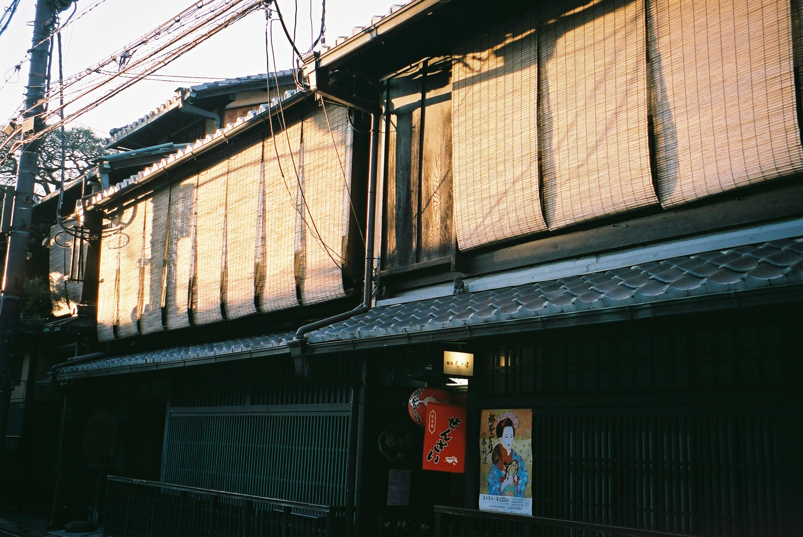
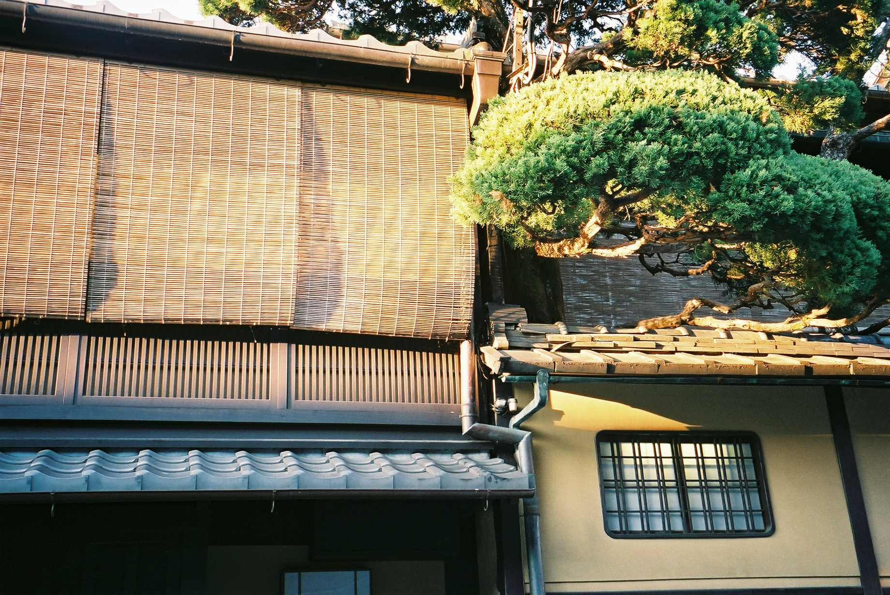
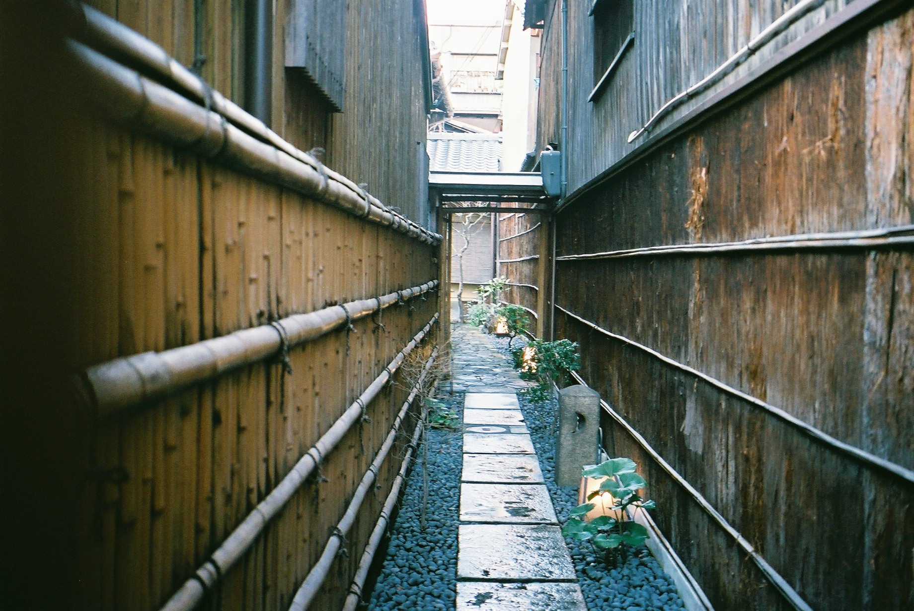
夕方、京都の祇園を歩き、町屋が夕日に照らされていました。 町屋の門構えはシンプルでそして美しい。 京都に好きで訪れる理由の一つは、やはり東京ではほとんど見ることが出来ない、この美しい町屋を見ることが出来るからだと思います。
In the late afterroon, i walked down street of Gion, Kyoto. Light of sunset reflects on Machiya, which is traditional wooden buildings in Japan. Facade of Machiya is simply beautiful. One of the reasons i love this city is that i can see this Machiya buildings in all over Kyoto which we rarely cannot see in Tokyo.
Ume Blossoms
March 13th, 2017

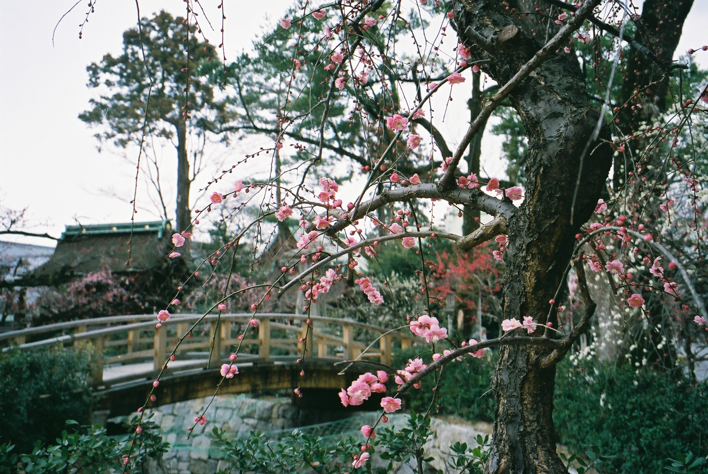
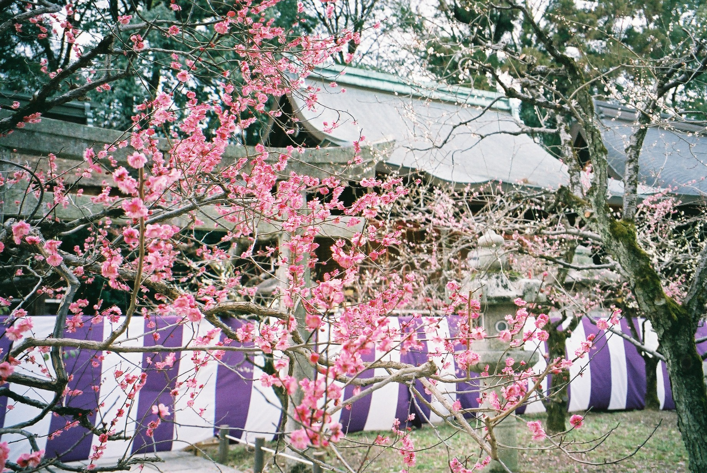
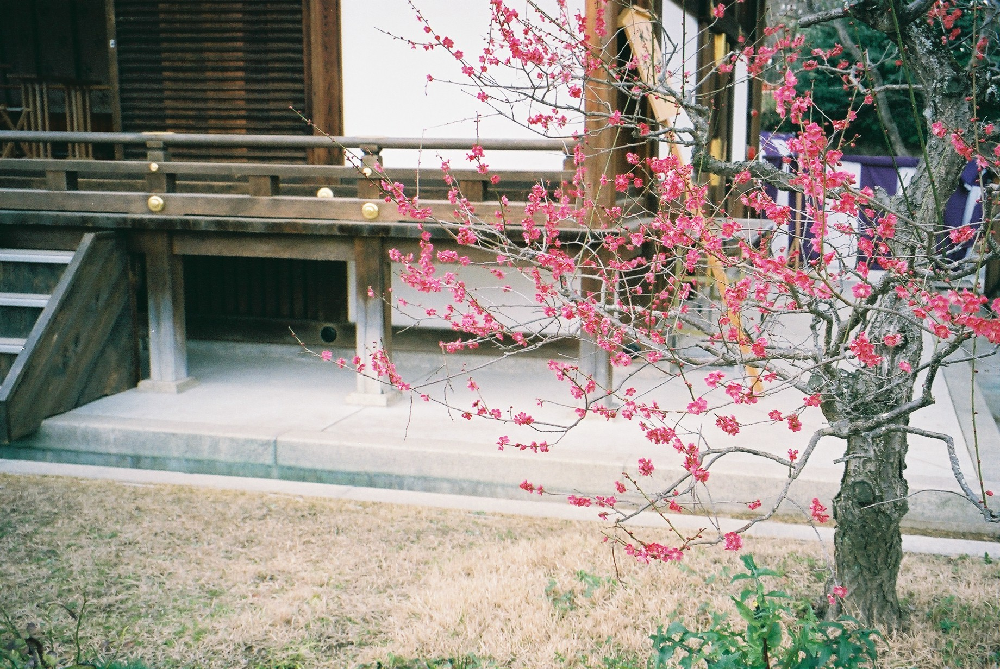
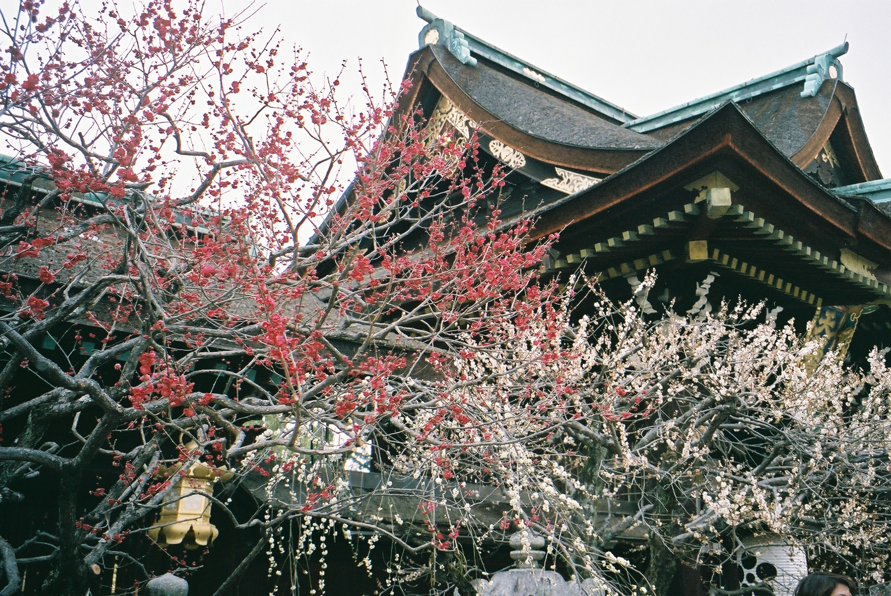
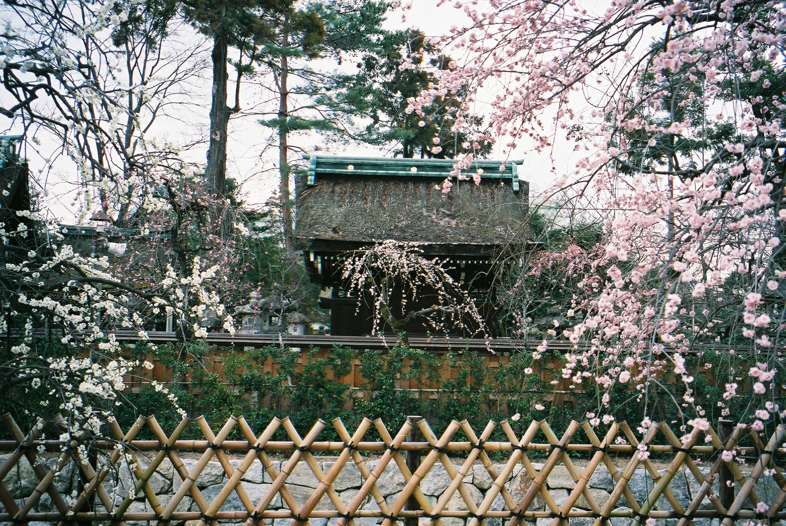
先日京都に行ってきました。 桜の季節がもうすぐきますが、一足先に咲く梅を観に、京都の北野天満宮に行きました。梅苑には紅・白・ピンク色の梅が咲きほこっており、苑内の梅は５０種類、全部で１５００本だそうです。苑内の見学後は梅の茶菓子を食べることができます。
Recently I went to Kyoto and visited Kitano-tenmangu known as one of famous places to see ume trees. They flower normally in Feb and March before cherry blossom flower all over in Japan. In the ume garden, you can see beautiful colors of ume such as white, dark pink, light pink. There are 50 kinds of ume trees and 1500 trees in the garden. After visiting ume garden there, you can enjoy ume-gashi with tea.
Cherry Blossom
March 5th, 2017

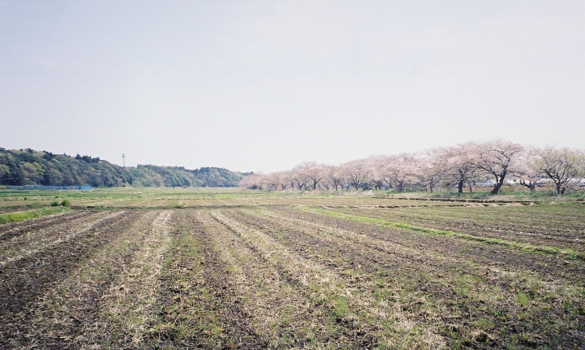
桜の季節がそろそろやってきます。 日本中が淡いピンクの色に包まれる季節。桜の名所はたくさん日本中にありますが、以前自分が住んでいた近くの公園、手賀の丘公園では、毎年家族連れのピクニックでいっぱいになります。
現在、住んでいる東京・杉並の家には、一本の桜の木があり、これも４月になると花を咲かせとても美しくなります。父が小学生の頃に植えられた桜の木で、55年近く杉並の家を見守ってくれているそうです。
Season of cherry blossom will come soon. Japanese street and town is surrounded by light pink color in this season. In Japan, there are many famous places for cherry blossom. From near my home where i had lived before, there is huge park (Tegano oka Ko-en) with cherry blossom and many families go on a picnic every year.
Currently, i live in Tokyo, Suginami-ku, and in this house there is one cherry blossom which come to bloom beautifully in April. This cherry blossom is planted in our garden around 55 years ago when my father’s was elementary school student and it enliven our family every year.